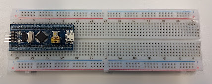
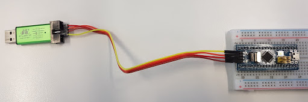
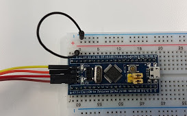
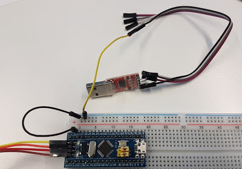
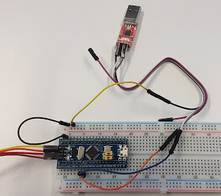

Getting Started
Check that your hardware kit includes the following components
- Breadboard
- Breadboard jumper cables
- Breadboard power supply (not used)
- USB to TTL adapter
- STLink V2 compatible SWD programmer
- STM32F103C8T6 development board (axa "Bluepill")
- MicroUSB cable (not used)
- 24MHz 8 channel USB logic analyser. This is a clone
of a Saleae Logic device, but we will be honoring copyright and using open source firmware & software for it
- Logic analyser test probes (not used)
- 4.7k resistor
Flashing your microcontroller
- Plug the microcontroller into the left of the breadboard, with the programming header pointing left.
-  Connect the programming header to your SWD programmer. From top to bottom, the pins on the board are:
Connect the 4 pins to the matching pins on the programmer, paying attention to the diagram on the programmer to identify the correct pins.
- Erase the microcontroller:
st-flash erase
- Write the Hello World binary you downloaded in the prerequisites to the microcontroller:
st-flash write
STM32F103C8T6_Hello_NUCLEO_F103RB.bin 0x8000000
- Observe that the LED labelled "PC13" on the board flashes a short flash every 1.2 seconds.
Connecting the serial port
- Unplug the SWD programmer from the computer so that the board is unpowered.
- Connect a jumper wire from a G pin on the microcontroller board to the Negative '-' rail on the breadboard.
- Connect the negative rail of the breadboard to 'Gnd' on the serial adapter.
- Connect the 'RX' pin of the serial adapter to pin A2 on the board.
- Connect the 'TX' pin of the serial adapter to pin A3 on the board.
- Leave the 3.3V and 5V pins on the adapter disconnected. They can be used for providing power, but for now, we are powering the board from the SWD
programmer.
- Plug the serial adapter into your computer. You can find the serial adapter via
dmesg | grep ttyUSB, it will normally be /dev/ttyUSB0.
- Open a terminal session and connect to the serial port:
cu -s 9600 -l /dev/ttyUSB0
- Reconnect the SWD programmer to power the board.
- You should see the microcontroller report "Blink" on each loop.
- You can terminate the serial connection by typing '~.'
Next
{kind=link}
{kind=link}
{kind=link}
{kind=link}
{kind=link}